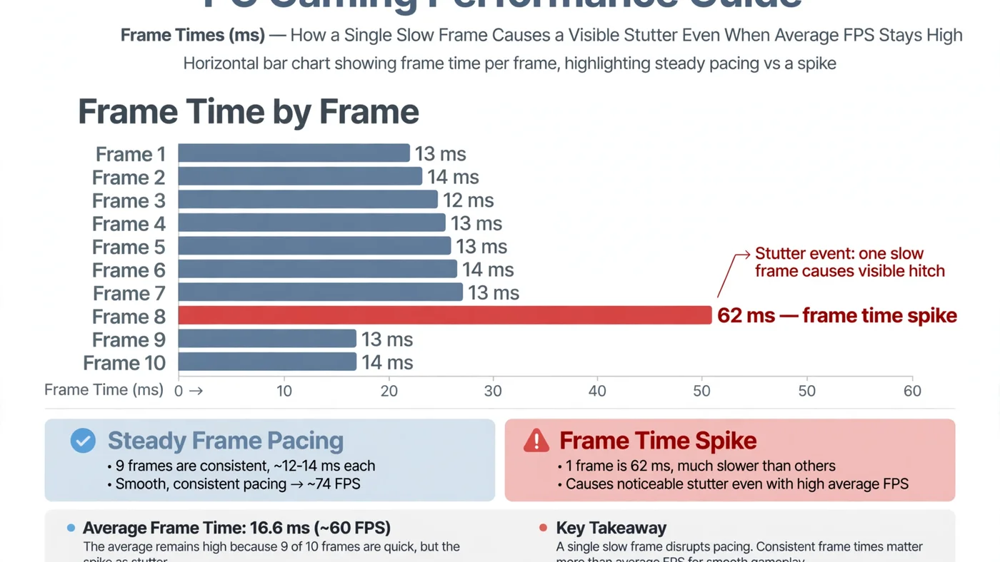

What Is Frame Time? Why High FPS Can Still Feel Choppy
Frame time is the time your PC takes to render a single frame, measured in milliseconds. It is the reason a game can report 100 FPS and still feel choppy: FPS is an average, and averages hide the slow frames. If you want to understand why a game stutters, stop staring at the FPS counter and look at the frame time graph instead.

The Short Answer: FPS Is an Average, Frame Time Is the Experience
Your FPS counter shows how many frames were rendered in the last second, on average; frame time shows how long each individual frame took. When they disagree, trust frame time — it matches what you actually feel.
Imagine two games, both reporting 100 FPS. In the first, every frame takes a steady 10 milliseconds. In the second, most frames take 8 milliseconds but one frame every second or so takes 100 milliseconds. Both average a similar FPS, yet the second game visibly hitches. The difference is entirely in the frame times.
This is why experienced players talk about frame pacing: the evenness of frame delivery. Good pacing means each frame arrives on schedule; bad pacing means frames bunch up and stall, and your eyes register every stall as a stutter or hitch.
What Frame Time Actually Measures
Frame time is measured in milliseconds (ms), and it is simply the inverse of frame rate: divide 1,000 by the FPS to get the frame time, or divide 1,000 by the frame time to get the FPS. A perfectly steady frame rate has a perfectly steady frame time.
| Frame rate | Frame time per frame | What it feels like |
|---|---|---|
| 30 FPS | 33.3 ms | Playable for slow-paced games, noticeably sluggish for fast ones. |
| 60 FPS | 16.7 ms | The standard smooth target for most players. |
| 120 FPS | 8.3 ms | Very responsive; the usual high-refresh target. |
| 144 FPS | 6.9 ms | High-refresh smoothness, if the pacing stays even. |
| 240 FPS | 4.2 ms | Competitive territory; only matters with a matching monitor. |
Two things matter here. First, the frame time budget shrinks as the target rises: at 240 FPS, every frame must be done in just over 4 milliseconds, so even a small delay is a large share of the budget. Second, these numbers only describe a steady state — a game averaging 60 FPS with frame times bouncing between 10ms and 40ms feels worse than a locked 50 FPS at a steady 20ms.
Frame time also has two halves: the CPU's time to prepare a frame (game logic, physics, draw calls) and the GPU's time to render it. Whichever half is slower sets the frame time — a spike can be a CPU problem, a GPU problem, or the GPU sitting idle while the CPU catches up. Our guide to CPU vs GPU bottlenecks explains how to tell which side is holding a frame back.
Why 100 FPS Can Still Feel Choppy
The maths makes the illusion obvious. Suppose a game renders 100 frames in one second. If 99 of those frames take 8 milliseconds each and one frame takes 208 milliseconds, the total is 1,000 milliseconds — one second — so the counter proudly reports 100 FPS. But for nearly a quarter of a second, the screen showed nothing new. You experienced a freeze, and the FPS counter called it a good second.
This is not a rare edge case: it is exactly what happens during shader compilation, asset streaming, a background task waking up, or a CPU core briefly maxing out. The average survives; the experience does not. That is why stuttering and 1% lows matter: 1% lows are another way of exposing the slowest frames the average hides.
There is a subtler version of the same problem: uneven pacing without dramatic spikes. Frame times alternating between 8ms and 16ms still average a respectable FPS, but the motion looks juddery because frames do not arrive at regular intervals. If a game "feels off" despite a healthy FPS number, uneven pacing is the first suspect.
Frame Time vs FPS vs 1% Lows
These three metrics are related, but they are not interchangeable. Use each for what it is good at:
| Metric | What it tells you | What it hides |
|---|---|---|
| Average FPS | Overall speed of the system. | Every slow frame, smoothed away. |
| Frame time graph | Exactly when and how badly frames stall. | Nothing — but it takes a minute to learn to read. |
| 1% lows (in FPS) | How bad the slowest 1% of frames were, as a single number. | Whether the slow frames were one big spike or constant judder. |
A practical rule: if the average FPS and the 1% lows are close together, pacing is healthy. If they are far apart, open the frame time graph — isolated spikes and constant sawtooth patterns have different causes and fixes.
How to Read a Frame Time Graph
You do not need expensive tools: MSI Afterburner with RivaTuner draws a live frame time graph over your game, CapFrameX and Intel PresentMon capture sessions for analysis, and many games include a built-in graph. Record a few minutes of real gameplay — a menu or quiet corridor tells you nothing.
- A flat line is the goal. Small wobbles are normal; the line should stay within a narrow band around your target frame time.
- Isolated tall spikes mean something occasionally blocks the pipeline: a shader compiling, an asset loading, a background task, or a brief CPU stall.
- A regular sawtooth pattern often points to a frame cap or sync setting fighting the monitor's refresh rate, or a CPU that cannot quite sustain the target.
- A line drifting upward over time suggests heat building up, or a memory leak slowly eating headroom.
Watch the graph alongside CPU and GPU usage if your tool supports it: a spike matching a maxed-out CPU core is a different problem from one where the GPU sits idle, and the fix follows the cause. Our step-by-step bottleneck check walks through that diagnosis.
What Causes Frame Time Spikes
Most spikes trace back to one of a handful of causes, and the pattern usually gives it away:
- CPU hitches. The processor briefly cannot prepare frames fast enough — a busy scene, heavy physics, or a background task stealing a core.
- Shader compilation stutter. The first time a new effect appears, the game compiles its shader and that frame stalls; it usually disappears on repeat visits (see our shader compilation stutter guide).
- Asset streaming. Moving fast through an open world forces textures and models to load on demand; slow storage makes this visible (see our storage bottleneck guide).
- Memory pressure. Too little RAM, or a single stick instead of a matched pair, forces the system to shuffle data mid-frame (see our RAM bottleneck guide).
- Thermal throttling. A hot CPU or GPU drops its clock speed to cool down, and frame times jump until it recovers.
- Sync and cap conflicts. VSync, frame caps and variable refresh rate can fight each other and produce rhythmic judder rather than random spikes.
Online games add one more suspect that is not frame time at all: network lag. If the hitching only happens in multiplayer, read lag vs low FPS before chasing a hardware fix.
Frame Time and Your Monitor: Refresh Rate, VSync and Frame Caps
Your monitor has its own schedule: a 60Hz display shows a new image every 16.7ms, a 144Hz display every 6.9ms. When frame delivery and refresh fall out of step, you get tearing or judder even with a healthy frame time graph.
Variable refresh rate displays (G-Sync and FreeSync) largely solve this by adapting the refresh to the frame, which is why they make uneven frame times feel less harsh. A frame cap set slightly below the monitor's maximum refresh rate is another classic trick: it gives the CPU and GPU a small buffer, so a frame that runs slightly long still lands on time. Our VSync, G-Sync, FreeSync and FPS cap guide explains which combination fits your setup.
Input latency is the related metric: NVIDIA Reflex and AMD Anti-Lag shorten the queue of frames waiting to be rendered, which keeps frame times honest under load (see NVIDIA Reflex vs AMD Anti-Lag).
How to Fix Choppy Frame Times
Work through this list in order, checking the frame time graph after each change so you know what actually helped:
- Cap the frame rate slightly below your monitor's refresh rate (or at a level your PC sustains comfortably). A stable cap beats an unstable maximum.
- Close background software — updaters, overlays, browsers and recording tools all compete for CPU time.
- Update graphics drivers and, for stutter on first visits, let the game finish any shader pre-compilation step instead of skipping it.
- Lower CPU-heavy settings first (crowd density, physics, view distance) if spikes coincide with high CPU usage.
- Move the game to an SSD if spikes happen when entering new areas, and make sure RAM runs in dual channel.
- Check temperatures. If spikes grow worse over a session, clean dust filters and improve airflow before buying anything.
- Re-test after each change. One change at a time, or you will never know which fix mattered.
If none of this flattens the graph, the slow half is likely a genuine hardware limit — the point where a structured bottleneck fix or an upgrade makes sense.
Frame Time in Different Kinds of Games
Not every genre cares about frame time equally. Competitive shooters live or die by it: at high refresh rates, a single 30ms spike can cost a shot, which is why esports players cap frame rates and obsess over consistency. Open-world games are the classic spike territory, because streaming a new district stresses storage, CPU and memory at once. Simulation and strategy titles tend to show CPU-driven pacing problems instead.
Slow-paced single-player games are the most forgiving: a steady 30 or 60 FPS with even pacing feels fine, and an occasional spike during a scene change barely registers.
When Frame Time Points to a Bottleneck
A frame time graph is also a bottleneck detector. If the GPU finishes quickly but frames still arrive late, the CPU, memory or storage is the slow half; if the GPU is saturated and frame times rise with resolution and settings, the graphics card is the limit. That distinction decides whether your next upgrade should be a processor, a card, or something cheaper like RAM or an SSD.
Before spending anything, sanity-check a planned combination: enter your parts and resolution into the PC Bottleneck Calculator (see its methodology page) and compare its verdict with your own frame time graph.
Free PC Bottleneck Calculator — Estimate CPU and GPU balance for your resolution and workload: check whether your CPU or GPU is the slow half of the frame on the PC Bottleneck Calculator before you buy an upgrade.
Conclusion
Frame time is the metric your eyes actually experience: the milliseconds each frame takes, and above all how evenly they are delivered. A high FPS average means little if slow frames keep interrupting it, and a modest but steady frame rate feels better than a fast, uneven one. Read the frame time graph, match spikes to their cause, and fix the slow half of the pipeline. To check whether your hardware is the limit, try the free PC Bottleneck Calculator.
Frequently Asked Questions
What is a good frame time for gaming?
It depends on your frame-rate target: a steady 16.7 milliseconds per frame gives 60 FPS, 8.3 milliseconds gives 120 FPS, and 6.9 milliseconds gives 144 FPS. Consistency matters more than the number alone — a flat 16.7ms line feels smoother than an average of 10ms interrupted by spikes.
Why does my game feel choppy at 100 FPS?
Because FPS is an average. If most frames render quickly but a few take much longer, the average still looks high while those slow frames show up as visible hitches. Check the frame time graph: a flat line means smooth play, while tall spikes mean stutter.
Is frame time more important than FPS?
They answer different questions, so use both. FPS tells you the average speed of your system; frame time tells you how evenly that speed is delivered. A high FPS with uneven frame times feels worse than a slightly lower FPS with steady frame times.
How do I check frame time on my PC?
Use an overlay with a frame time graph, such as MSI Afterburner with RivaTuner, or capture a session with a tool like CapFrameX or Intel PresentMon. Many games also include a built-in performance graph. Record a few minutes of real gameplay, then look for spikes rather than the average.
What causes frame time spikes?
Common causes include a CPU that briefly cannot keep up, shader compilation on a first visit to an area, assets streaming from slow storage, running out of RAM, background software competing for the CPU, and thermal throttling. The pattern of the spikes usually points to the cause.
Sources
Official documentation referenced in this guide: